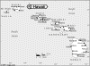

Hawaii

Attention: If you use this or any of the AIRS lists in any state, please report any bad phone numbers or emails to the webmaster. This is the responsibility of all users, including you. Thank you!
Greg Kent
CROSSROADS:uhhhhh Kalanianaole?
(gkent@hawaii.edu)
Honolulu, 96825
PHONE:808-396-9422
BUSES:70 bus
COMMENTS:
Busy graduate school student with a tad of mechanical
aptitude. No shame, if you need help call. VW's got to
stick together!! Aloha!
AVAILABLE:
8am to 10:30pm(firm, not even 10:34)-but I work and go to school so you can leave a
message :)
familiar with:1600
I CAN PROVIDE THE FOLLOWING SERVICES:
INTERNET ACCESS
TOOLS
TELEPHONE ACCESS
MECHANICAL HELP
COFFEE/TALK
TRANSPORTATION HELP
Favorite beer type:Anything cold
Ken
(labmission@juno.com)
CROSSROADS: farrington
Waianae, 96792
PHONE: 808 695 0196
VW'S: 61 Kombi 67 Bug
COMMENTS: beach bum seeks work
AVAILABLE: any time
familiar with: 1500, 1600
I CAN PROVIDE THE FOLLOWING SERVICES:
INTERNET ACCESS
TOOLS
TELEPHONE ACCESS
MECHANICAL HELP
PARTS AVAILABLE
COFFEE/TALK
SPARE ROOM: 3 nights
Favorite beer type: Beer is for wimps!
Shawn Zenor
CROSSROADS: Big Island/Pacific Ocean
(admin@imua-tour.com)
CITY: Hilo, 96720
PHONE: (808)934-0072
VW'S: Only Vanagon Westies (4) but am a Splitty guy at heart, just can't find any...
AVAILABLE: any time
familiar with: 25hp, 36hp, Bastard40hp, 1200, 1300, 1500, 1600, fuel injection, type4
engine
I CAN PROVIDE THE FOLLOWING SERVICES:
INTERNET ACCESS
TOOLS
TELEPHONE ACCESS
TRANSPORTATION HELP
MECHANICAL HELP
SPACE TO WORK ON BUS
STORAGE SPACE
PARTS AVAILABLE
COFFEE/TALK
SPARE ROOM
CAMPING SPOT: 4 nights or more
Favorite beer type: Micro brands
Steven Goo
(slksd600@lava.net)
CROSSROADS: Kaimuki
Honolulu, 96816
PHONE: 808-780-7595
VW'S: 2ea 1968 & 1ea 73
AVAILABLE: Tue-Wed-Thurs / 9am to 3pm
familiar with: 1200, 1300, 1500, 1600, 1776+, dual carbs, fuel injection, type4 engine
I CAN PROVIDE THE FOLLOWING SERVICES:
INTERNET ACCESS
TOOLS
TELEPHONE ACCESS
TRANSPORTATION HELP
MECHANICAL HELP
PARTS AVAILABLE
Favorite beer type: Anything cold
Gem
CROSSROADS: wet/dry side of the big island (depends on my mood)
EMAIL: bluesun_geo@yahoo.com
hilo, 96720
PHONE: n/a for the moment
VW'S: '71 bus '73 super duper beetle
COMMENTS:
I am willing to help with what I can, I travel all around the island so drop me a line. .
. . I'll swing by or your welcome at my campfire :)
oh and i dont have a house or anything like that but your more than welcome to camp with
me and share the room i do have, and minor supply of tools :)
AVAILABLE:
I go to school full time, so Im around Hilo on the weekdays, but I keep late hours, so
just call whenever. . . when i get a phone that is
I am familiar with: 1600
I CAN PROVIDE THE FOLLOWING SERVICES:
TOOLS
TRANSPORTATION HELP
MECHANICAL HELP
COFFEE/TALK
Favorite beer type: Beer is for wimps!
amanda "mandie"
EMAIL: bluesun_geo_at_yahoo_dot_com
CROSSROADS: n/a
hilo, 96720
PHONE: 808-937-0557
VW'S: 71' westy and 73' superbeetle
COMMENTS: i more or less live in my bus, but if you need help give me a call, theres no
telling where i am on the island and i always have a full set of tools, emergency stuff,
and beer ect. . . so just call and ill help if i can :)
AVAILABLE: call . . . i keep wierd hours
I am familiar with: 1600
I CAN PROVIDE THE FOLLOWING SERVICES:
INTERNET ACCESS
TOOLS
TELEPHONE ACCESS
TRANSPORTATION HELP
MECHANICAL HELP
SPACE TO WORK ON BUS
SOME PARTS
COFFEE/TALK
CAMPING: 4 nights or more
SPARE ROOM: MOVE IN!!! :)
Favorite beer type: Anything cold
aloha-paul
CROSSROADS: hawaii
EMAIL: alohaplantation@hawaiian.net
CITY: hanalei, 96714
PHONE: 808 8281693
VW'S: 1956 bug, 1958 westfalia, 1964 westfalia
COMMENTS: I love westfalia's and keep the 58 on the mainland for vacations. I also enjoy
surfing and sailing. We own a B&B
on Kauai. <www.garden-isle.com/aloha/>
Enjoy life take the Bus
Aloha Paul
I am familiar with: 36hp, 1200, 1300, 1500, 1600
I CAN PROVIDE THE FOLLOWING SERVICES
INTERNET ACCESS
TOOLS
TELEPHONE ACCESS
TRANSPORTATION HELP
MECHANICAL HELP
COFFEE/TALK
CAMPING: none
Favorite beer type: Micro brands
alex
EMAIL: alex_moncata_at_yahoo_dot_com
CROSSROADS: hawaii
CITY: kailua
ZIP CODE: 96734
PHONE: 808 8647329
VW'S: 71 bus
AVAILABLE: all times ex nights
I am familiar with: 1600, 1776+
I CAN PROVIDE THE FOLLOWING SERVICES
INTERNET ACCESS
TOOLS
TELEPHONE ACCESS
TRANSPORTATION HELP
MECHANICAL HELP
SOME PARTS
COFFEE/TALK
CAMPING: none
SPARE ROOM: none
Favorite beer type: Anything cold
Dan
EMAIL: kafer_d_at_yahoo_dot_com
CROSSROADS: H-3
CITY: Kailua
ZIP CODE: 96734
PHONE: 808-254-0214
ONLY CALL IF EMERGENCY
VW'S: 67' Bug
COMMENTS: I'm in the Military and have no set schedule, I'll do my best when I'm
around?
AVAILABLE: Whenever
I am familiar with: 25hp, 36hp, Bastard40hp, 1200, 1300, 1500, 1600
I CAN PROVIDE THE FOLLOWING SERVICES
INTERNET ACCESS
TOOLS
TELEPHONE ACCESS
TRANSPORTATION HELP
MECHANICAL HELP
SOME PARTS
CAMPING: none
SPARE ROOM: none
Favorite beer type: Micro brands
juan
EMAIL: gonzos_raptor_at_msn_dot_com
CROSSROADS: Island of Oahu
CITY: Kapolei
PHONE: 8086741764
VW'S: 1976 Vanagon
COMMENTS: U.S. Navy Submariner (1991- pres)
AVAILABLE: ??
I am familiar with: 1776+
I CAN PROVIDE THE FOLLOWING SERVICES
INTERNET ACCESS
TOOLS
TELEPHONE ACCESS
TRANSPORTATION HELP
SPACE TO WORK ON BUS
STORAGE SPACE
COFFEE/TALK
CAMPING: none
SPARE ROOM: CALL ME/IT DEPENDS
Favorite beer type: Anything cold
{kind=link}